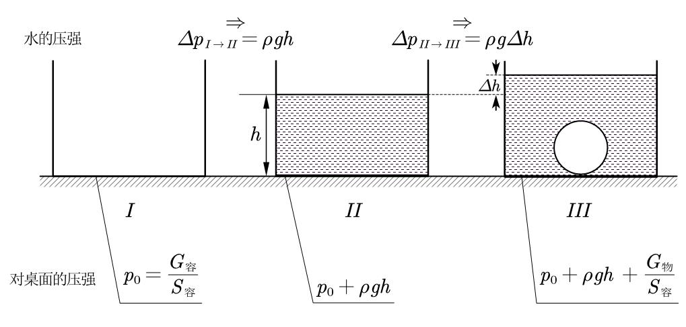
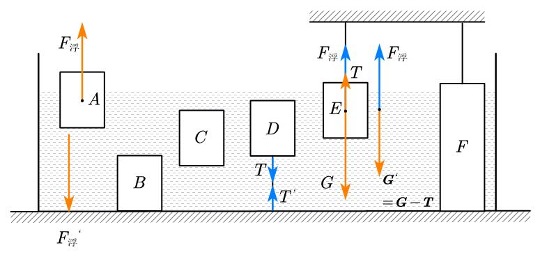
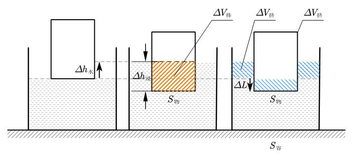

有关浮力模型的一些思考
前言
浮力可以说是中学阶段的一大难点，在此我想分享我学习浮力与压强模块的一些思考。希望对你能够有所帮助。
注:图片较多可能会出现加载较慢的情况，请见谅。
一、基本公式
1.阿基米德的浮力定律：浸入静止流体中的物体受到一个浮力，其大小等于该物体所排开的流体重力，方向垂直向上并通过所排开流体的重心。
表述为公式是：
2.液体压强的计算公式：
其中代表该点到自由液面的高度差。
3.压强的定义式：
其中代表正压力。
二、对阿基米德定理的理解
【例题1】
有一个梯形物体浸没在水中，如图一所示，水的密度为，深度为，物块高度为，体积为，较小的下底面底面积为，与容器底紧密接触，其间无水，水面处的大气压强为，则该物体所受的浮力为（ ）
A.
B.
C.
D.
【解析】
假如这道题直接使用阿基米德定律进行计算，得出，这是不对的。
首先我们要明确浮力的两点：
①浮力是水对于物体向上的力（合力）。
②用阿基米德算出来的浮力，和都会包含进去，不需要再算（上下大气压抵消为0，上下抵消作为浮力）。
那么回到这道题，将梯形物块沿地面分为与底面紧密接触的矩形和剩下的两个三角形。其中三角形部分提供向上浮力，而矩形只收到向下压力。
（1）根据①我们知道，两个三角形（可看作完全浸没在水中）受到的斜向上的两股压力与其向下的压力，合成了竖直向上的，再根据②，我们可以对三角形直接使用阿基米德原理，得出竖直向上的浮力为
（根据图分析可得）。
（2）而矩形部分因为与地面紧密接触，受到的向下的压强为，那么压力就为
进而计算出：
故答案选D
【总结】
①浮力是水对于物体向上的力。
②用阿基米德算出来的浮力，大气压强和水的压强都会包含进去，不需要再额外加上。
三、变化量问题
浮力中的变化量模型很多，其中部分很容易混淆，这里我会用和等代替每一过程并将不同力做区分。
个人习惯的符号对应：
——浮力
——（水对容器）压力
——（桌面对容器）支持力/（容器对桌面）压力
——拉力
——容器底面积（体积同理）
——物体底面积（体积同理）
——水面变化量
——（物体）浸入水深度
——默认为水密度
我会尽量用文字描述这些物理量，以免造成歧义。
压强的变化量
这里研究的压强是容器对桌面的压强与水对容器底的压强。
【分析】
如图：

▫$I$：
只有容器压着桌面，容器对桌面的压强为
▫$I \to II$：
加水，压强变化了
也就是水对容器底的压强。
▫$II \to III$：
放入物体，整个桌面受到的力多了物体的重力，相当于在容器外放物体。这是因为水与物体的作用力与物体对水的作用力是相互作用力，在研究水、容器、物体的整体时会被相互抵消。因此我们得出，容器对桌面的压强变化量为
而水对容器底的压强则不同，从图中我们可以看出，水对容器底的压强变化量为
根据体积我们知道
那么就可以写出
你可能很想问：为什么水对容器底的压强和容器对桌面的压强一个是，而另一个是呢？稍安勿躁，在接下来压力的变化量中我们会详细区别这两种力，在此之前，我们先简单总结一下刚刚分析的结论。
【结论】
从上述$I \to II$过程中我们可以看出：在只装水时，容器对桌面的压强和水对容器的压强只相差容器所产生的压强
从上述$II \to III$过程中我们可以看出：在放入物体后，容器对桌面的压强变化了，水对容器的压强则变化了
压力的变化量
我们研究的压力包括水对容器压力和桌面对容器支持力（容器对桌面压力）。这里我们先给出结论。
【结论】
在往只有水的容器中放入物体时：
①对于水的压力的变化量，有，对应其压强变化量。
②对于桌面支持力的变化量，有，对应其压强变化量。
【分析】
我们以这几个较常见的模型进行分析：

▫放入物体后，对于图中的A、B、C、D、E、F图，水的压力都增大了，这是因为物体对水的作用力与水对物体的作用力（也就是浮力）互为相互作用力，大小相等，而水对容器增加的压力就是物体对水的作用力，可以理解为物体通过浮力这个媒介让水的压力变大。因此为了简便，我习惯将这部分记作（浮力的反作用力由水作用于容器底）
注意：物体通过浮力为媒介作用于水，在对水做受力分析时千万不要同时存在与。
▫而桌面支持力只增加了。
注意：桌面支持力是桌面对容器的力，分析时应对容器整体（容器与其内的所有物品）进行受力分析；而水的压力是水对桌面的压力，分析时应对水分析。
因此，我们对于容器整体进行分析。A、B、C、D图中都相当与在容器外放物体，因为他们的浮力、拉力都是物体与水、物体与容器之间的相互作用力，在整个容器整体分析时会相互抵消，这种力称为系统的内力（内部的相互作用力）。而E、F两种情况可以看作一种漂浮的特例：他们的拉力是外界给予的，与容器没有关系。我们可以看作外力使物体的“重力”减少，于是有：
特别的，对于F图的情况，我们需要审清题目条件，判断容器是否对其有支持力。
▫二者的区别其实就是分析方式的不同。选取的整体不同，获得的结果也会不同。也就是上文注意中的：
桌面支持力是桌面对容器的力，分析时应对容器整体（容器与其内的所有物品）进行受力分析；而水的压力是水对桌面的压力，分析时应对水分析。
浮力的变化量
根据浮力公式
我们可以看出，浮力受和影响。因此在不变的情况下，有
关于的计算请参见体积的变化量段。
体积的变化量
体积的变化量是又一大容易混淆的部分，也是浮力计算题的核心。在这里，我们主要研究物体挤开水的体积变化量和物体浸入水中的体积变化量，如下图所示：

【分析】
图中是移动的距离变化量，是水面上升的距离变化量，是浸入水中的深度变化量，之间的关系可以由图得出：
在这张图上我们可以清晰地看出与的区别，接下来我们分别讨论如何计算它们。
对于，除了可以用阿基米德定理的变形式求外，还可以用浸入水中的深度计算
对于，我们观察图可以发现物体下降的部分将水挤到了容器两边，故有
那么这两者之间有何联系？我们观察右图，发现经由（对应图中蓝色阴影部分），我们可以实现将物体排开水的体积（即图中的橙色阴影与蓝色阴影总和）进行转化，而转化后的体积正好是。那么我们就可以得出的又一个计算公式：
在这里我们分析的实际上是物体从未浸入液体到浸入液体的变化。假如物体已经浸入一部分，我们可以将已经浸入的部分分割并放到一边，因为它不会对体积计算产生任何影响。
此外，物块出水的情况与入水几乎一致，只是顺序颠倒。因此此结论依旧适用。
【结论】
注意：图中的并不具有较大实际意义，在这里只作为一个中间量出现，不要和与混淆。
深度的变化量
水深度、物体浸入深度、物体裸露长度这“三高”与密度的关系常常作为中考选择压轴的最后一问，我们先给出结论。
【结论】
对于上图的三种情况，物块的密度与水的密度的关系是：
其本质就是
其中是的变化量。
【分析】
我们以的关系为例。
图中标注出了从①→②和①→③的，设①→②的深度变化量为
①→③的深度变化量为
对于①→②：
对于①→③：
这里的是m的质量，题目并没有给出，所以我们将其相比消去
我们可以发现，这条式子的推导中并未用到，所以这条式子对于其他深度也是适用的。接下来我们用将其化简。
对于左边的有
于是联立两式得到
接着将化为的形式（比例的性质）
【练习1】
小明有一不吸水工艺品，底座为质地均匀的柱形木块，其上有合金块，将工艺品如图甲放入水中，静止时木块浸入深度为，如图乙放入水中，静止时浸入水中深度为，工艺品所受浮力与甲相比____。（选填“变大”、“变小”或“不变”）若因粘合处松开合金块沉底，不计粘合材料影响，合金块密度为水的倍，当木块在水中竖直静止时，浸入深度为____。（用、和表示）
水位的变化量
在浮力部分还有一种很经典的模型：在浮冰熔化/船上落石后水位的变化。
为了解决这类问题，我们展开浮力变化量的公式：
变形得
接下来我们逐个分析各图的变化情况：
(A) 冰融化后可以看作悬浮在水中，因此不变，也就是，故，水位不变。
(B) 石头沉底，船与石头这个整体的浮力变小，从到。因此浮力变小，为负，也为负，水位降低。
(C) 同(A)(B)，浮力增大，水位升高。
(D) 冰融化后看作漂浮在表面，不变，但因为稀释变小，于是水位升高。
【练习2】
（多选）如图所示，水平桌面上盛有适量盐水的烧杯中漂浮着冰块，悬浮着物块。当冰块完全熔化后，下列分析正确的是（）
A. 烧杯中盐水密度变小
B. 烧杯内液面不发生变化
C. 杯底受到液体压强变小
D. 物块受到浮力变大
【练习答案】
【练习1】不变；$$(1-n)h_{1}+nh_{2}$$ 【练习2】AC.